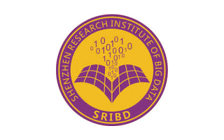
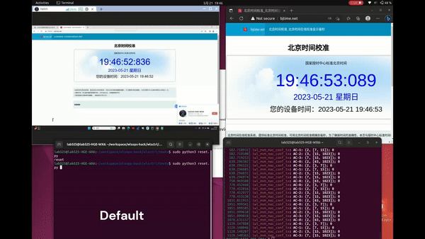
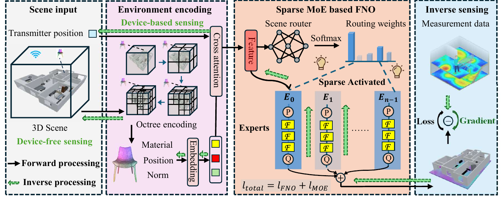
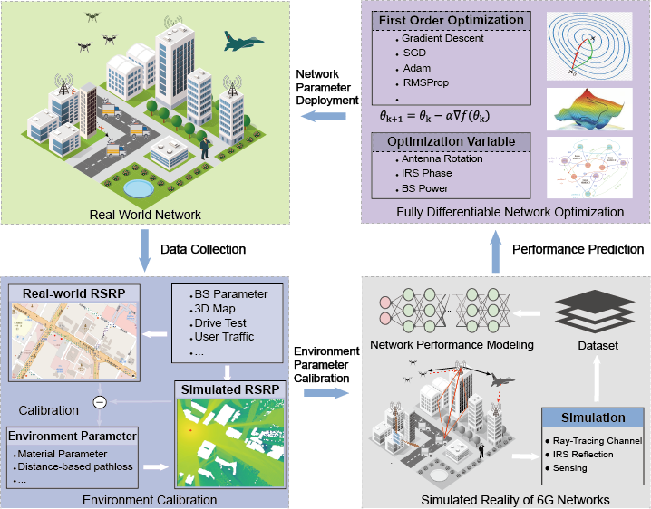
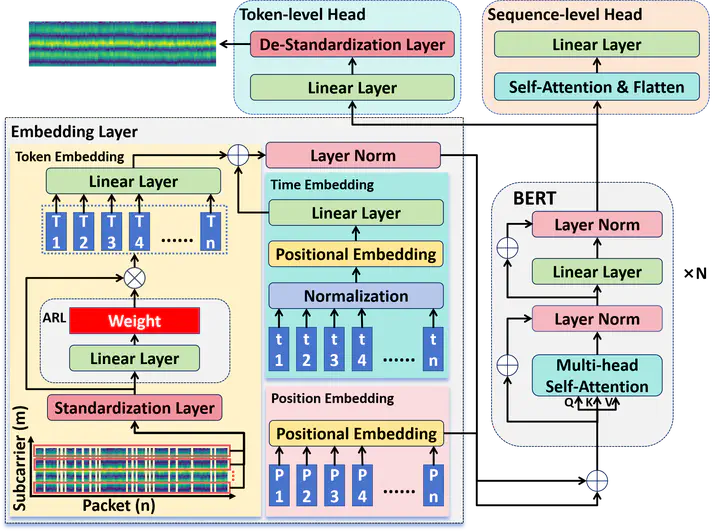
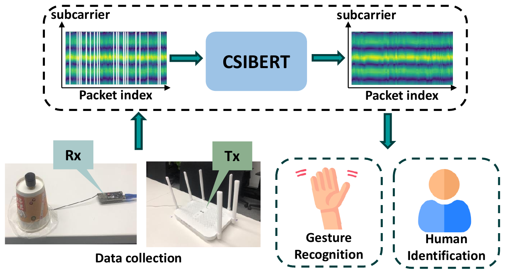
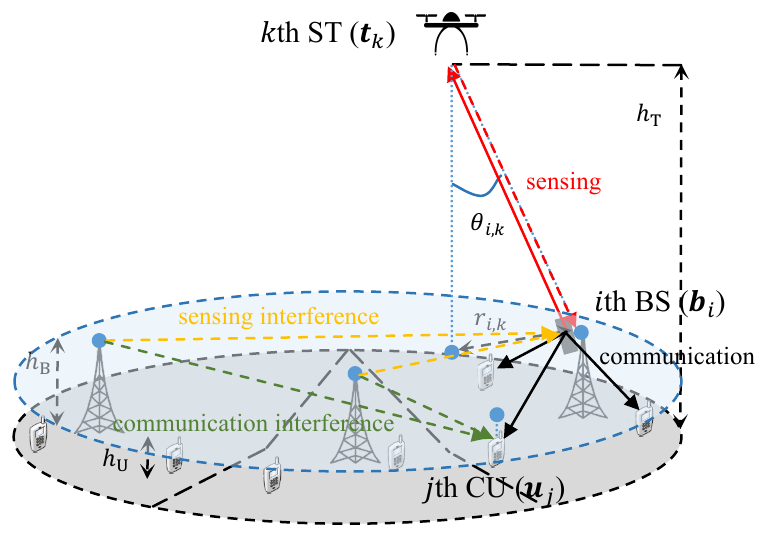

Real-time Wi-Fi Sensing System
A complete CSI sensing system for data collection, model training, packet-loss recovery, visualization, and real-time human tracking.
Wi-Fi CSI · BERT · Human TrackingI am currently a Visiting Scientist at the Shenzhen Research Institute of Big Data. I obtained my M.Phil. degree in Computer and Information Engineering from The Chinese University of Hong Kong, Shenzhen (CUHK-Shenzhen), co-supervised by Dr. Guangxu Zhu and Prof. Tsung-Hui Chang. I received my B.Eng. degree in Communication Engineering from SUSTech in 2023, supervised by Prof. Rui Wang.
Research interests. My research aims to combine wireless domain knowledge with artificial intelligence to design next-generation wireless systems and validate them in real-world deployments. I am particularly interested in ISAC, wireless sensing, differentiable radio rendering, and wireless digital twins. You can find more details in my publications. I am always open to related collaborations, so please feel free to contact me by email.
Joined the Shenzhen Research Institute of Big Data as a Visiting Scientist.
Our paper “Euler-Fi: An Eulerian Mixture-of-Experts for Rapid Wireless Channel Field Modeling” was submitted to IEEE Transactions on Mobile Computing.
Our paper “CSI-BERT2: A BERT-inspired Framework for Efficient CSI Prediction and Classification in Wireless Communication and Sensing” was accepted by IEEE Transactions on Mobile Computing.
Joined Southern University of Science and Technology (SUSTech) as a Research Assistant, working with Prof. Tianyue Zheng.
Our paper “CSI-BERT2: A BERT-inspired Framework for Efficient CSI Prediction and Classification in Wireless Communication and Sensing” was submitted to IEEE Transactions on Mobile Computing.
Graduated from CUHK-Shenzhen with an M.Phil. degree in Computer and Information Engineering. Sincerely grateful to Prof. Guangxu Zhu for his invaluable guidance and support.
Our paper “CSI-BERT2: A BERT-inspired Framework for Efficient CSI Prediction and Classification in Wireless Communication and Sensing” was released on arXiv.
Our paper “Integrated Sensing and Communications Signal SINR Prediction with Multi-Beam Statistical Channel” was presented at ISAP 2024.
Our paper “Coverage Analysis for Air-Ground Integrated-Sensing-and-Communication Networks” was published at Ucom 2024.
Our paper “Finding the Missing Data: A BERT-inspired Approach Against Package Loss in Wireless Sensing” was accepted by the IEEE INFOCOM DeepWireless Workshop 2024.
Won 3rd Prize in Huawei's First Wi-Fi Sensing Contest. Sincerely grateful to all my teammates for their hard work and dedication.
Started my Master of Philosophy studies in Computer and Information Engineering at CUHK-Shenzhen.
Graduated from Southern University of Science and Technology with a Bachelor of Engineering degree in Communication Engineering. Sincerely grateful to Prof. Rui Wang for his invaluable guidance and support.

Research on wireless sensing and differentiable radio simulation.

Developed Euler-Fi, a differentiable wireless channel field model that combines octree scene encoding with a sparse Mixture-of-Experts Fourier neural operator for real-time channel prediction, transmitter localization, and passive-object sensing.
Conducted research on Wi-Fi CSI sensing, BERT-based packet-loss recovery, real-time tracking, Sionna model calibration, and environment-calibrated differentiable wireless network simulation for 6G.
Wi-Fi MAC simulation and EDCA parameter optimization using MATLAB, NS-3, and Linux Wi-Fi drivers.
A complete CSI sensing system for data collection, model training, packet-loss recovery, visualization, and real-time human tracking.
Wi-Fi CSI · BERT · Human Tracking
A GPU-parallel and differentiable radio ray tracer supporting specular reflection, BVH acceleration, and electromagnetic-parameter optimization.
Taichi · GPU · Differentiable Ray Tracing
EDCA parameter optimization for proportional-fair Wi-Fi channel allocation, evaluated with MATLAB, NS-3, and Linux Wi-Fi drivers.
Wi-Fi · EDCA · NS-3 · Linux
Fanyi Meng, Tianyue Zheng
Submitted to IEEE Transactions on Mobile Computing

Fanyi Meng, Xinhao Li, Dongzhu Liu, Guangxu Zhu
Submitted to IEEE

Zijian Zhao, Fanyi Meng, Zhonghao Lyu, Hang Li, Xiaoyang Li, Guangxu Zhu
IEEE Transactions on Mobile Computing, 2025
[Paper]


Yihang Jiang, Fanyi Meng, Xinhao Li, Xiaoyang Li, Guangxu Zhu, Kaifeng Han, Qingjiang Shi
International Conference on Ubiquitous Communication 2024
[Paper]